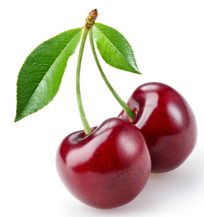

My Favorite Poems:
YouTube
UNUTAMADIĞIM |
Açardın,
Yalnızlığımda
Mavi ve yeşil,
Açardın.
Tavşan kanı, kınalı - berrak.
Yenerdim acıları, kahpelikleri...
Gitmek,
Gözlerinde gitmek sürgüne.
Yatmak,
Gözlerinde yatmak zindanı
Gözlerin hani?
"To be or not to be" değil.
"Cogito ergo sum" hiç değil...
Asıl iş, anlamak kaçınılmaz\'ı,
Durdurulmaz çığı
Sonsuz akımı.
İçmek,
Gözlerinde içmek ayışığını.
Varmak,
Gözlerinde varmak can tılsımına.
Gözlerin hani?
Canımın gizlisinde bir can idin ki
Kan değil sevdamız akardı geceye,
Sıktıkça cellad,
Kemendi...
Duymak,
Gözlerinde duymak üç - ağaçları
Susmak,
Gözlerinde susmak,
Ustura gibi...
Gözlerin hani?
Ahmet Arif

NAGAZAKİ'DE YAĞMUR |
Yağmur volta vuruyor Nagazaki'de, sinirli, öfkeli
Küçük kız korku içinde tutuyor elinde kör bir oyuncak bebeği
İstenmeyen bir yağmur bu, ağaçlar hoşlanmıyor ondan
Vişneler çiçekte, başlamış bile çiçek dökümü.
Külle karışık bir yağmur bu, sessiz ölümle dolu bir yağmur
Kör olmuş oyuncak bebek, küçük kız da kör olacak yarın
Zehir yapılacak bir çocuk tabutunun tahtasından
Tasa ve uzun süren kötülükten baharat yapılacak
Kötülük yağmur gibidir, kaçıp gizlenmek olanaksız ondan
Balıklar çıldırıyor, gökten yere düşüyor kuşlar
Güvercinler karga sesi çıkarmaya başlayacak birazdan
Suskun sazan balıkları birbirlerini ısırmaya ve ulumaya başlayacaklar
Kır çiçekleri dişlerini geçirecek etine insanların
Hava inleyecek göğüste, yüreği emecek, kemirecek
Bu yağmur gibi kötülüğe de dayanmaya gücü yok artık Nagazaki'nin
Senin ölmene göz yummayacağız Nagazaki!
Ey uzak, yeşil ve sakin kentlerin parklarındaki çocuklar
Bir şeye inanmak ya da inanmamak değil artık burada söz konusu olan
En yalın anlamıyla insan yaşamıdır söz konusu olan burada
Dinsin bu yağmur, vişnelere yağmasın bir daha...
1957
Ilya EHRENBURG
to be continued...back to top